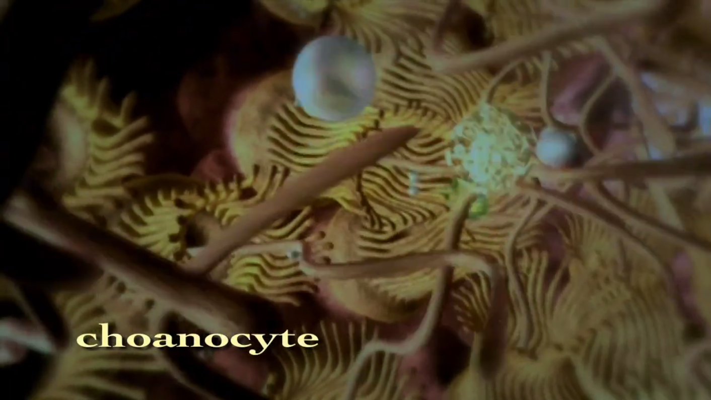
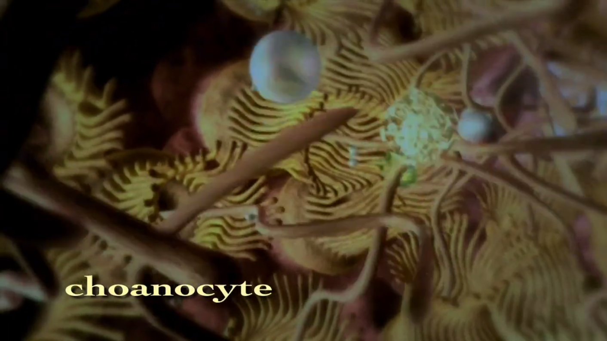
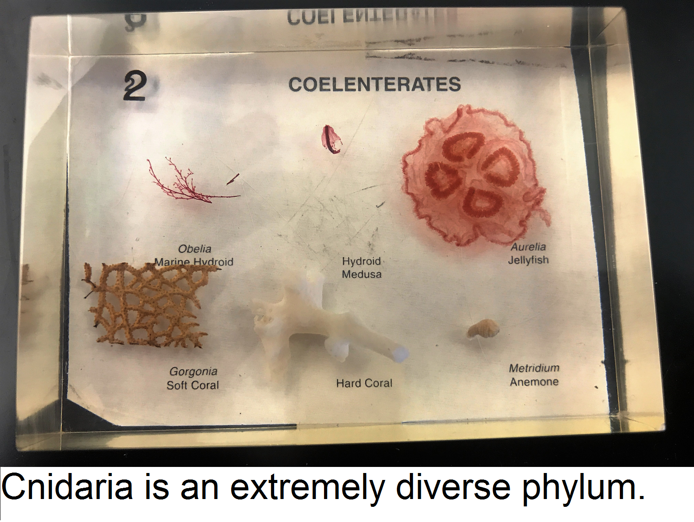
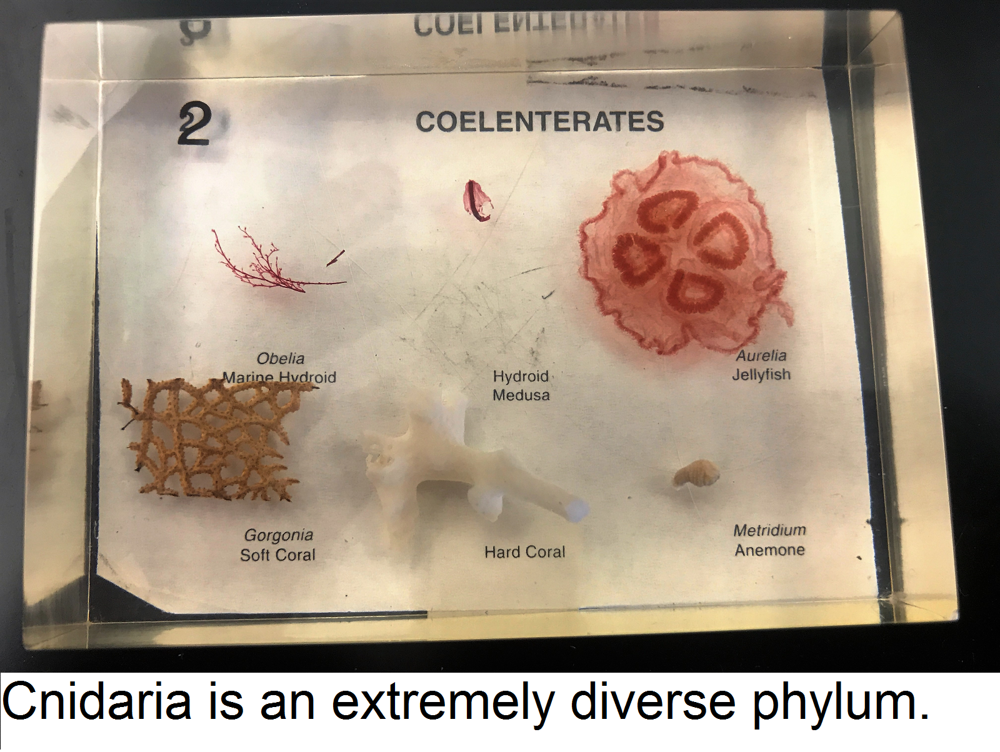
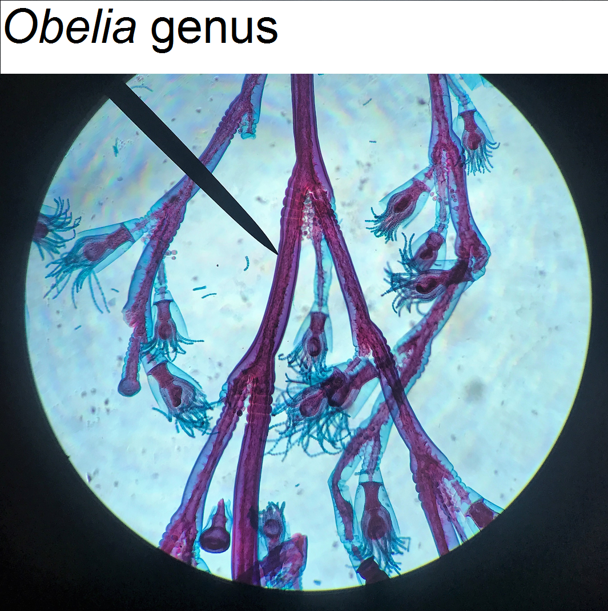
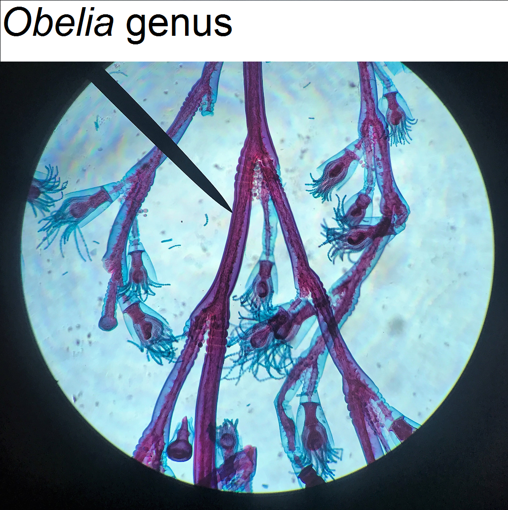
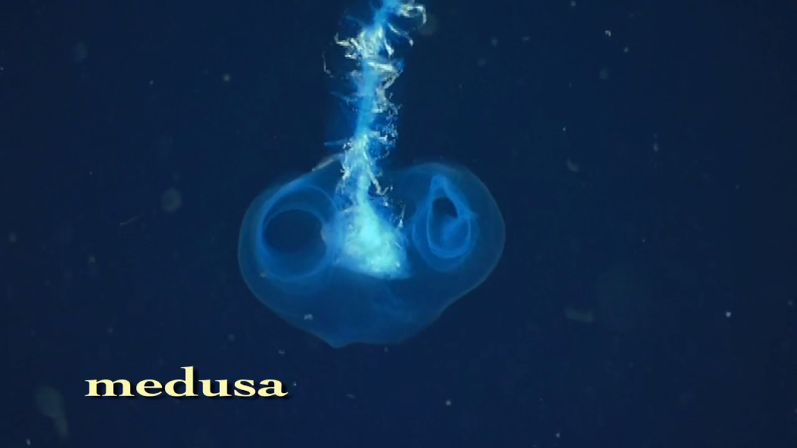
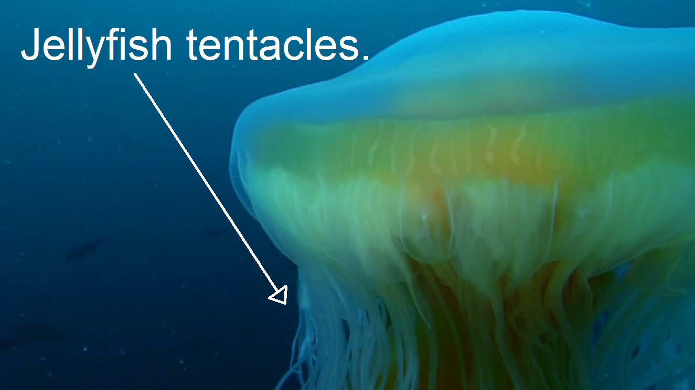
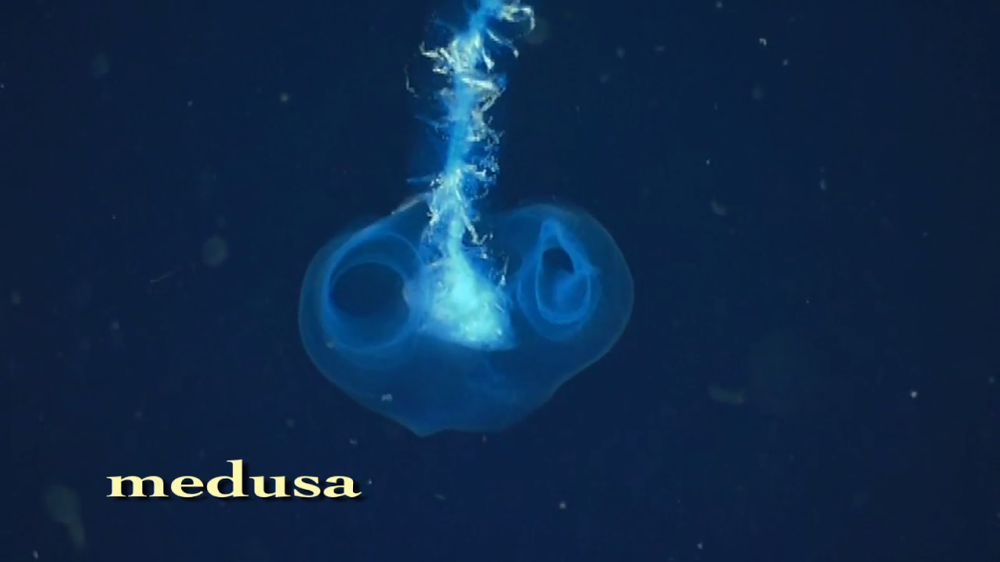
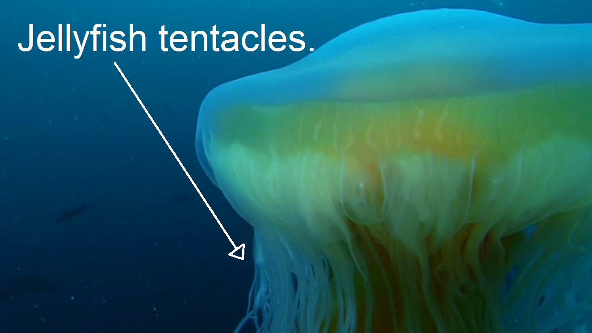

- All animals are multicellular. This is important because true complexity in the fields of both movement and defense are a result of many cells coming together to perform a common function. Sponges contain choanocytes, specialized cells with hair like extrusions, which filter water through pores in its body.
- Development of tissue. The existence of tissues, and the differentiation of cells within a living organism, is especially important for movement, considering that simple locomotion is a result of a variety of systems and cell types working in conjunction. Additionally, the development of nerves occurs here, which is crucial for movement and enhanced response to stimuli.
- Radial symmetry is evolved. This adaptation is significant because it further breaks down the body into individual, ergonomic sections that all piece together to form a creature that is not only functional, but highly capable.
- Development of muscle for movement. This allows for animals to stop being dependent on water currents and potentially move to terrestrial habitats. Having an innate system for controlling movement also allows for more autonomy in the hunt for resources and resultingly, greater survivability and better mechanisms of defense. Additionally, bilateral symmetry is developed, which allows for centralized nervous system to obtain sensory data from pairs of sensory organs that take in information in stereo.
- The evolution of a body cavity that separates organs and metabolism from other bodily systems allows for greater compartmentalization and sophistication in organisms.
- The evolution of the pseudocoelom and coelum similarly allows for a greater degree of complexity. Previously, animals, such as flatworms would have a digestive system, located in a centralized body cavity, that would act as both the digestive tract, and circulatory system combined. The “popularization” of the more advanced body cavity, or coelom, allows for the precise separation between digestion and circulation.
- In addition to having developed digestive tracts like phyla before it, annelids have tube-like, segmented bodies and typically have setae (small hairs) for movement. The segmented characteristic is especially important when one realizes that the characteristic spine and spinal cord of chordates is essentially a segmented system.
- Arthropods have a thick exoskeleton compared to annelida in addition to segmented bodies. They also have jointed and highly articulate appendages. Some arthropods have similar hair-like structures to Annelids, which suggests that arthropods and annelids are closely related and share a recent common ancestor.
- Echinoderms pioneered the development of an internal skeleton, or endoskeleton. The endoskeleton allows for animals to reach greater sizes because an internal skeleton supports the body, and allows for advantageous muscle insertions.
- Development of a spinal cord for enhanced movements, reflexes, and cell signaling occurs in the chordates. This adaptation allows neural signals to be transferred much more easily to muscle and in metabolism.
Continue reading to learn about movement and defense in each phyla in more detail!


 [3]
[3]


 

 
 

 
